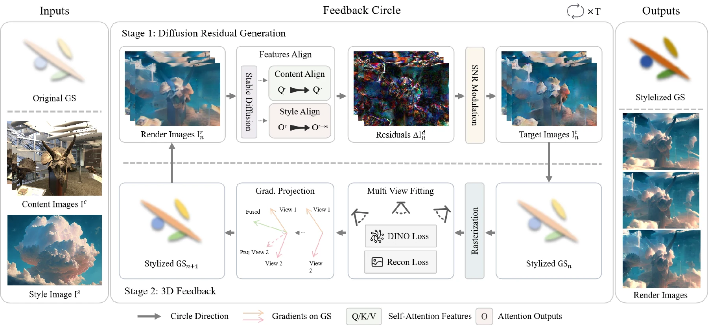
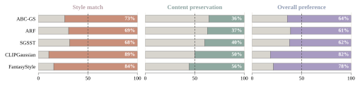

Abstract
Reference-guided stylization of scenes represented by 3D Gaussian Splatting (3DGS) is important for efficient and controllable 3D content creation. Existing VGG-feature-based 3D stylization methods provide stable rendered-view optimization, but often under-represent expressive reference style cues; diffusion models offer stronger image priors, yet direct per-view or score-based diffusion guidance can lead to view drift, local artifacts, and hard-to-control appearance updates. We present DReSG, a 3D-grounded residual-feedback framework for stylized Gaussian splatting. DReSG represents attention-guided diffusion proposals as residual targets relative to the current render, and progressively absorbs these residuals into a shared Gaussian scene through multi-view Gaussian feedback. To make this feedback stable and controllable, DReSG modulates residual strength during target construction and combines coverage-aware view selection with conflict-filtered color updates during multi-view fitting. Extensive experiments demonstrate that DReSG achieves competitive reference-guided stylization while better preserving scene structure and cross-view stability.
Pipeline

Qualitative Results
Attention and Residual Strength
3D-Grounded Feedback
Residual Target Construction
User Study

BibTeX
@misc{liu2026dresg,
title = {DReSG: Diffusion Residuals for Stylized Gaussian Splatting},
author = {Liu, Zhongliang and Liu, Wenjie and Li, Yang},
year = {2026},
eprint = {2608.29048},
archivePrefix = {arXiv},
primaryClass = {cs.CV},
doi = {10.48550/arXiv.2608.29048},
url = {https://arxiv.org/abs/2608.29048},
note = {Accepted to Pacific Graphics 2026 (Conference Track)}
}